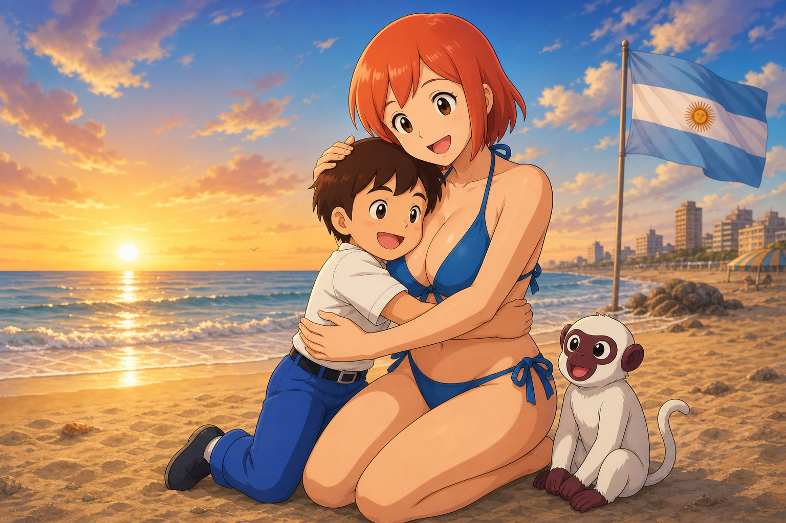

El niño Legendario buscando a mamá
UNA PEQUEÑA GRAN AVENTURA
Todo el camino se supera con un salto normal. El mono permite alcanzar la última caja; recoge todos los puntos y cajas para descubrir el final secreto.
NIVEL COMPLETADO

La siguiente aventura te espera.